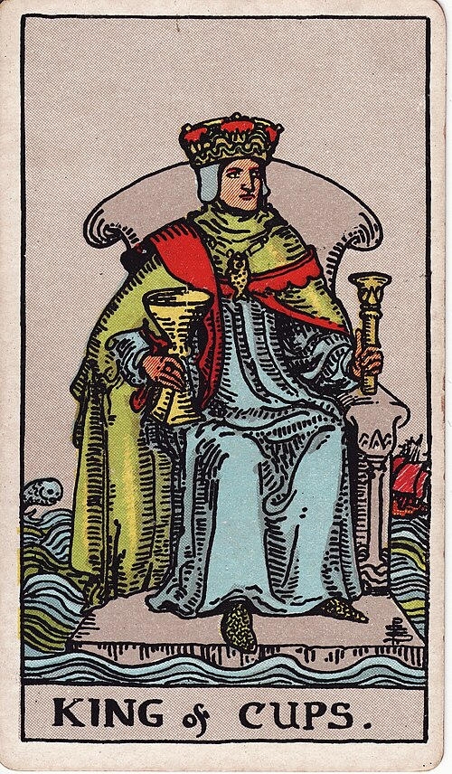

| Arcana | Minor |
| Suit | Cups |
| Element | Water |
| Attribution | Fire of Water |
King of Cups
In shortFeel it fully, then respond calmly.
Upright
This is strong emotion held steadily. He is the person who stays level in a crisis because he is processing rather than suppressing — diplomatic, kind, and hard to rattle. As advice: respond instead of reacting, and be the steady one.
Reversed
Steadiness turns into either suppression or manipulation. Feelings pushed down until they come out sideways, moods used to control a room, or coldness passed off as maturity. It can describe someone whose calm is a wall rather than a skill.
The turn
Wait until you are level, then act. Nothing here is improved by reacting now.
Reading with your own deck?
Sage records the cards you actually pull, writes the reading, keeps every one, and shows you what keeps returning across them. Free, private, no account.